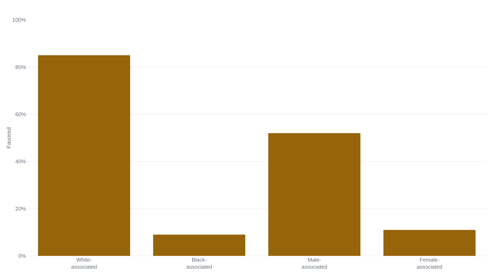

Amazon's resume screener taught itself to penalize the word 'women's'
Everything known about the scrapped experiment traces to a single 2018 Reuters investigation and five anonymous sources, and the flaw it describes now lives inside the resume screeners companies use today.
Why this matters
Companies now run software that reads resumes and ranks applicants before a person sees them. The oldest cautionary case is Amazon's: a scoring engine, built in the mid-2010s, that its own engineers found had taught itself to mark down women. This lesson walks through what the tool did, how firmly anyone actually knows it, and why the flaw behind it is not an Amazon bug but a property of any model trained to copy past decisions. By the end you will be able to say what deleting a biased field does and does not fix, and why "a person made the final call" is a weaker safeguard than it sounds.
- 01
- One gradient step drops the loss from 7.0 to 0.225: how a model is fit to its training data, the step that here copied a decade of Amazon's own hiring.
- 02
- Employers decide whether New York City's hiring-bias audit applies to them: the audit law written in response to tools like this, and whether it bites.
A resume engine that learned to prefer men
In 2018, Reuters reported that Amazon had quietly built, and then abandoned, a machine-learning tool that scored job applicants and had learned to penalize women.1 The account is Jeffrey Dastin's investigation, sourced to five people who worked on the effort and spoke on condition of anonymity.1 Every specific that follows traces to those five people.
By that reporting, a team began building the programs in 2014 to rate applicants from one to five stars, much as shoppers rate products on the site.1 They created about 500 models, each tied to a particular job function and location and each trained to recognize some 50,000 terms pulled from past applicants' resumes.1 The training set was ten years of resumes Amazon had received, most of them from men.1 The system, Reuters wrote, "taught itself that male candidates were preferable."1 It penalized resumes containing the word "women's," as in "women's chess club captain," and it downgraded graduates of two all-women's colleges the report did not name.1
The fix carried no guarantee
Amazon's engineers edited the programs to make them neutral to those particular terms. That, Reuters reported, was no guarantee the models would not find other ways of sorting candidates that turned out to be discriminatory.1 By the start of 2017, with executives having lost hope in the project, the team was disbanded.2 The tool was reported in October 2018, a year and a half after it had already been shut down.1
That timeline, and every figure in it, rests on one origin. The Reuters story was carried word for word by wire subscribers, including the Irish Times and RTÉ, but a reprint of the same report is not a second source; each is Dastin's article again.2 Amazon itself declined to discuss the engine with Reuters.1 When other outlets asked, the company said the tool "was never used by Amazon recruiters to evaluate candidates" and had been "only ever used in a trial and developmental phase."3 That sits against what Reuters' sources described: recruiters who "looked at the recommendations generated by the tool ... but never relied solely on those rankings."1 Both accounts agree on the point that bounds the harm. The ratings were never the sole basis for a hire, and the tool never became a live screen. Nothing in the record says it rejected real applicants at scale.
- Amazon confirms a resume-scoring tool existed and was tested.
- The failure it illustrates is established on its own, in the fairness literature below.
- The same bias is measurable in resume screeners tested in 2024.
- Every specific, the 500 models, the "women's" penalty, the two colleges, rests on five anonymous sources.
- No one in a position to know has confirmed those details on the record.
- Amazon disputes that recruiters used the tool to evaluate candidates at all.
Why deleting the word did not delete the bias
A model trained to reproduce a decade of Amazon's hiring reproduced its skew toward men.1 The training data recorded whom Amazon had hired, and Amazon had mostly hired men. A model built to predict which resumes resemble past hires will, when past hiring favored men, learn to favor the signals that came with being a man.
So the engineers deleted the obvious signal and made the models ignore the word "women's."1 It did not fix the bias, because being a woman was written into the data in more than one place. A women's college, a sport, a verb more common on one group's resumes than another's: any of these can stand in for the field that was removed. A feature that carries the information of a protected trait without naming it is a proxy. The formal name for the failure is redundant encoding, the trait encoded redundantly across correlated features, so a model can rebuild it after the direct field is gone.4
Remove the column that names a protected trait and a model can often rebuild it from the columns that remain, because the trait is spread across features that correlate with it. Deleting "women's" did not delete what "women's" was standing in for.4
This is not particular to Amazon. Solon Barocas and Andrew Selbst named redundant encoding as the core obstacle to fair machine learning in employment. Membership in a protected class is often "encoded in other data," they wrote, so scrubbing the explicit field leaves the model able to reconstruct it.4 Cynthia Dwork and colleagues described the same move in formal terms. They called the strategy of dropping protected attributes "fairness through blindness," and showed it can be beaten by a test built from correlated data that is "in practice, essentially equivalent."5
No one has to intend this. Take a screener that is never shown an applicant's gender (illustrative, not something Amazon's tool is known to have done). Say the resumes it learns from show that people who list a certain hobby, or a certain two-year gap, tend to match past hires. The model will reward or punish that signal, and through it the trait behind the signal. No field is labeled for the trait, and the people reading the output would see only a ranking.
This is also why the last line of defense does not hold. Recruiters at Amazon looked at the tool's ranking, by the sources' own account.1 A biased score that a person then approves, or merely starts from, has still shaped the decision. Deleting the variable does not delete the bias, and adding a human does not launder it.
The same weakness in today's screeners
Amazon's tool never went live. The failure behind it did. Automated resume screening is common enough now that regulators have written rules for it. The EEOC treats an algorithm that rates applicants as a "selection procedure" under Title VII. It applies the four-fifths rule: if one group's selection rate is less than 80% of the highest group's rate, that is a rule-of-thumb sign of adverse impact.6 The agency stresses it is only a rule of thumb, and that an employer stays liable even when a vendor built the tool.6 In the EEOC's own worked example, if 80 white and 40 Black applicants apply and 48 and 12 advance, the selection rates are 60% and 30%; their ratio, 50%, sits below the 80% line.6
New York City went further. Local Law 144 has been in effect since January 2023 and enforced since that July. It bars employers in the city from using an automated employment decision tool unless an independent bias audit has first measured the tool's selection rates and impact ratios across sex and race categories. The audit results must be published.7 Whether the audit changes anything is a separate question: a companion lesson on how that law works in practice found that employers largely decide for themselves whether they are even covered.
And the bias Amazon's engineers saw by 2015 is measurable in current tools. In 2024, University of Washington researchers tested three open-source language models on more than 550 real resumes. They swapped in 120 names associated with white and Black men and women across nine occupations, more than three million comparisons in all.8 The models favored white-associated names 85% of the time and Black-associated names 9%; male-associated names 52% and female-associated names 11%. Black-male-associated names were never preferred over white-male-associated ones.8

The takeaway
Amazon's recruiting tool is worth remembering for what is certain about it, not for the details that are not. What is certain, because it does not lean on the anonymous account, is the failure it stands for. A model trained to reproduce past decisions reproduces the bias in them, and deleting the biased word does not fix that, because the model rebuilds the trait from proxies. A person reviewing the output does not undo it. That is why the same pattern turns up in resume screeners running today, and why the law has begun to demand that someone measure it. The Amazon story may rest on five people. The lesson does not rest on them at all.
- 01
- This is how AI bias really happens: Karen Hao walks the same failure through each stage of a machine-learning pipeline, the Amazon case among her examples.
- 02
- What Makes Algorithms Go Awry?: Zeynep Tufekci on how a hiring model can select against a trait no one ever programmed in.
Sources
- Reuters · Amazon scraps secret AI recruiting tool that showed bias against women
- The Irish Times · Amazon scraps secret AI recruiting tool that showed bias against women (Reuters wire)
- VICE (Motherboard) · Report on Amazon's recruiting tool carrying Amazon's on-record response
- California Law Review · Solon Barocas & Andrew D. Selbst, "Big Data's Disparate Impact" (2016)
- ITCS 2012 · Cynthia Dwork, Moritz Hardt, Toniann Pitassi, Omer Reingold, Richard Zemel, "Fairness Through Awareness"
- EEOC · Select Issues: Assessing Adverse Impact in Software, Algorithms, and Artificial Intelligence Used in Employment Selection Procedures Under Title VII (May 18, 2023)
- NYC Department of Consumer and Worker Protection · Automated Employment Decision Tools (Local Law 144)
- University of Washington News · AI tools show biases in ranking job applicants' names by race and gender (Oct. 31, 2024)